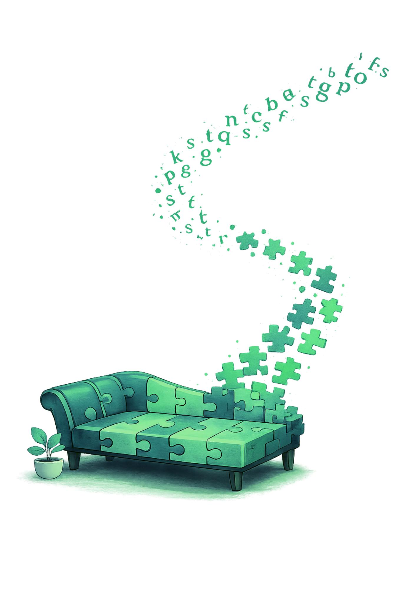

Atención a jóvenes y adultos.
Lic. Fernando Madruga
Psicólogo (UBA) • MN 72.094 • Atención presencial en Villa Urquiza • Atención online • Jóvenes y adultos
Un espacio de trabajo reflexivo para pensar lo que te está pasando, poner en palabras lo que se vuelve difícil, donde se construye una orientación posible, considerando caso por caso y respetando la singularidad de cada persona.

¿Cuándo consultar?
Hay momentos en los que algo se desordena: ansiedad, angustia, estrés sostenido, duelos, cambios vitales o conflictos en los vínculos. A veces no se trata de un “hecho puntual”, sino de una sensación persistente de malestar o de la necesidad de entender por qué se repiten ciertas situaciones.
Desde este lugar se brinda la oportunidad para pensar eso con continuidad, a tu ritmo, acompañado y en un contexto adecuado para trabajarlo.
Jóvenes y adultos
Atención presencial
Consultorio en Villa Urquiza.
Atención online
Sesiones por videollamada con el mismo encuadre y confidencialidad.
Sobre mí
Soy Licenciado en Psicología recibido de la Universidad de Buenos Aires, con formación de posgrado orientada a la atención clínica y al psicoanálisis. Sostengo una formación continua a través de cursos, seminarios y espacios de estudio. Matrícula Nacional del Ministerio de Salud de la Nación.
Ética y confidencialidad
Jóvenes y Adultos
Orientación psicoanalítica
Cómo trabajo
Trabajo con orientación psicoanalítica. La propuesta no es ofrecer soluciones rápidas ni dar respuestas generalizadas, sino sostener un espacio de escucha y elaboración que permita interrogar lo que le pasa a cada persona y cómo se posiciona frente a eso, considerando la singularidad de cada caso.
- Primera entrevista: se ubica el motivo de consulta y se acuerda modalidad (presencial/online) y encuadre de trabajo.
- Frecuencia: semanal (y, si es necesario, puede pensarse una frecuencia mayor).
- Si en algún momento considero necesaria una derivación o una interconsulta con otro profesional, lo indico de manera clara.
Duración de la sesión
50 min. aproximadamente.
Frecuencia
Semanal.
Orientación
Psicoanalítica.
Preguntas frecuentes
¿Cómo es la primera entrevista?
Es un primer encuentro para ubicar el motivo de consulta y acordar modalidad (presencial/online) y encuadre de trabajo.
¿La atención es presencial u online?
Ambas. Presencial en Villa Urquiza y también online.
¿Con qué frecuencia son las sesiones?
Habitualmente semanal. En algunos casos puede considerarse una frecuencia mayor.
¿Con qué orientación trabajás?
Trabajo con orientación psicoanalítica.
¿Trabajás con obras sociales?
Trabajo de manera particular. Puedo brindar documentación para reintegros si tu cobertura lo permite.
¿Atendés parejas?
No. Si lo necesitás, puedo brindar contactos de derivación.
¿Esto reemplaza atención de urgencia?
No. Si estás en una situación de urgencia o riesgo, es importante que recurras a los servicios de emergencia de tu zona.
Contacto
Para coordinar una primera entrevista, podés escribirme por WhatsApp.
+54 11 57502776
Capdevila 2833, C.A.B.A.